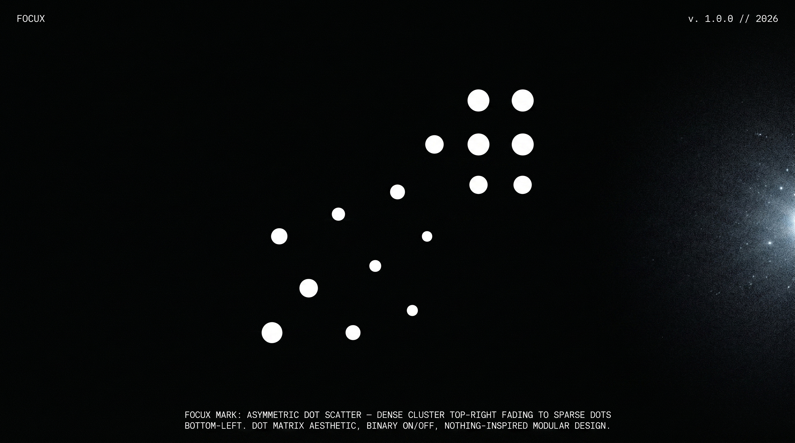
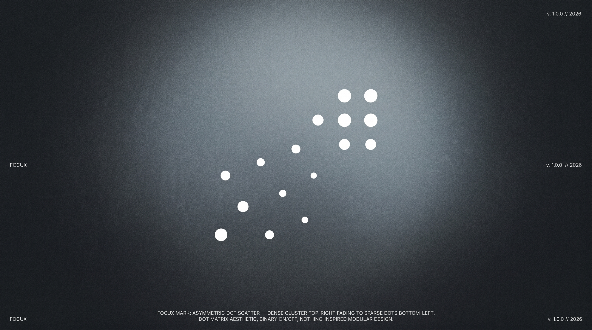
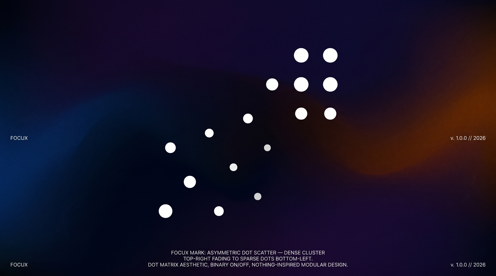
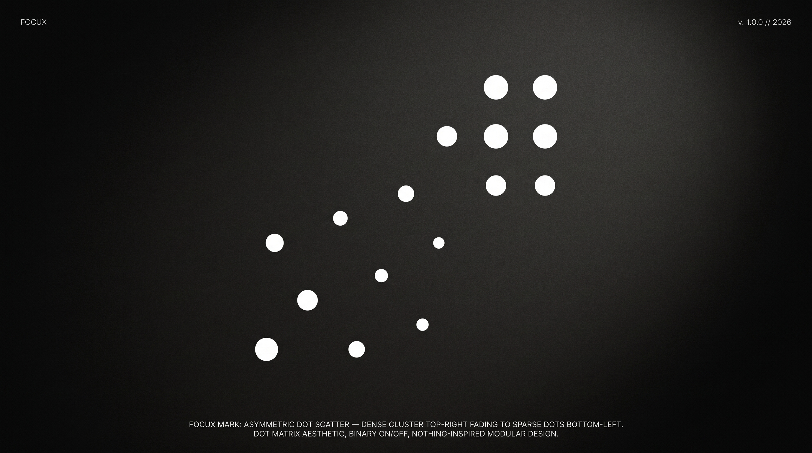
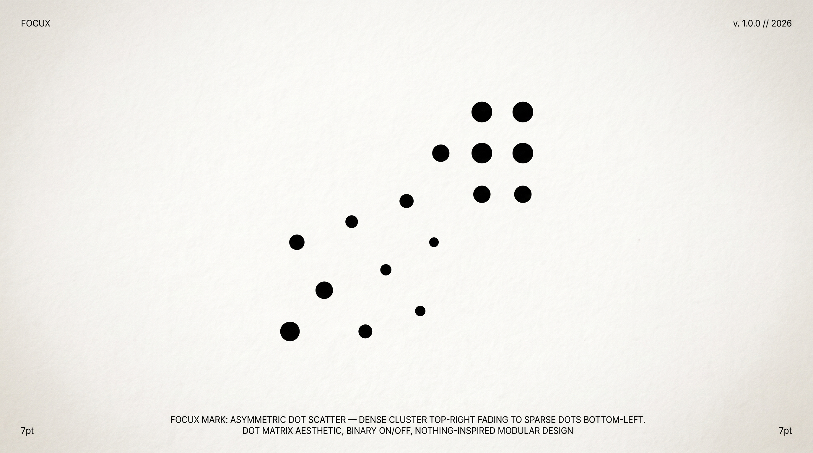
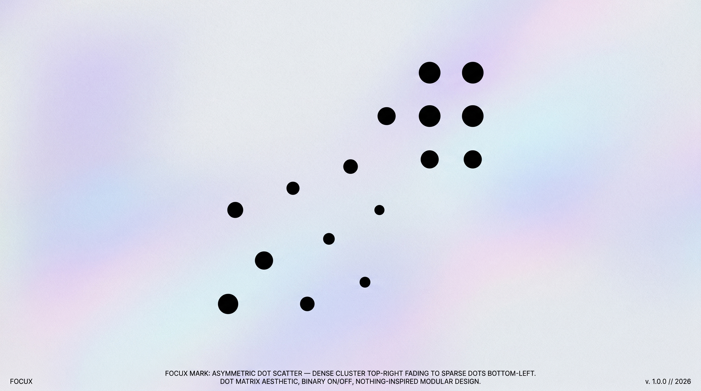
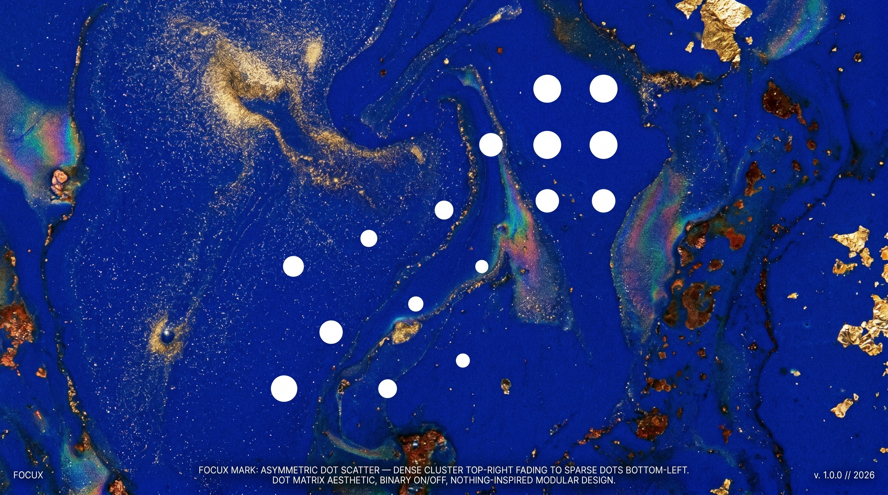
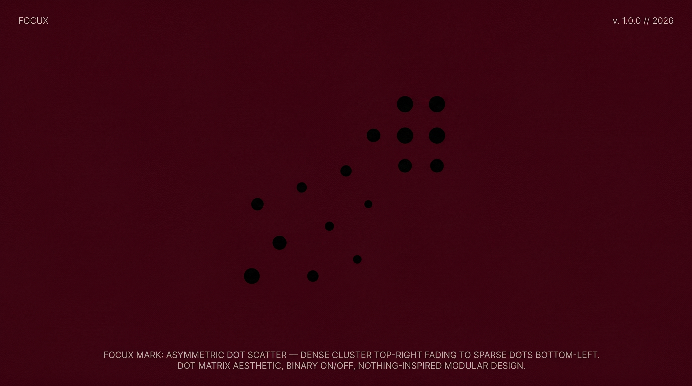

Primary usage · dark backgrounds
Each dot breathes independently
Light backgrounds · print · UI icons
Opacity encodes signal strength
When animation not available
Social avatars · favicons · embossing
Primary lockup · navigation · headers · app bars
Mark left · wordmark right · gap = mark width × 0.1
Square formats · social profiles · app icons
Mark centered top · wordmark centered below
FocuX is monochrome by default. Color is reserved for system states only: active/focus → white on black · resting → gray · alert → red (system only, never brand). The dot opacity gradient in the mark encodes signal strength — this gray scale is the data language of the product.
Gill Sans carries humanist warmth without sentimentality. The slightly organic terminals soften the geometric precision of the mark. Used for wordmark, headlines, and UI body copy.
Space Mono for all data readouts, labels, timestamps, and system metadata. Monospace enforces the idea that FocuX output is precise, measured, objective — like a terminal reading biological data.








FocuX reads your body and returns only what matters. The brand should do the same — remove everything decorative, keep only signal. If an element doesn't carry information, it shouldn't exist.
The mark breathes. The product listens in real time. But it never demands attention — it waits to be consulted. Animation is subtle, purposeful. Never decorative. Never loud.
Every measurement is an act of attention toward the user's body. The monochrome palette, the monospace data readouts, the exact opacity gradients — precision is how FocuX shows it cares.